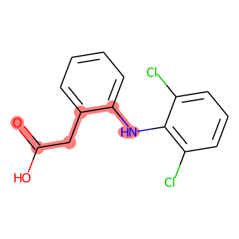

SMARTS (SMiles ARbitrary Target Specification) is a lanuguage used to search, select, and match a substructure pattern in a molecule SMILE. The idea of SMARTS is reminiscent of regular expressions (regex) for texts. Following some pre-defined rules for searching, SMARTS offer a powerful way to systematically search though a large corpus of molecules for a particular chemical phenotype.
More details on the SMARTS and its ‘grammar’ can be found on the Daylight’s official page
Few words of caution: * SMILES represent whole molecule (graph), SMARTS identify a substructure (subgraph). * All SMILES are valid SMARTS * It is better to be precise with your query than be general (you dont know what it might hit if not meticulous) > For instance, the SMILES O means an aliphatic oxygen with zero charge and two hydrogens, i.e. water. In SMARTS, the same expression means any aliphatic oxygen regardless of charge, hydrogen count, etc, e.g. it will match the oxygen in water, but also those in ethanol, acetone, molecular oxygen, hydroxy and hydronium ions, etc. Specifying [OH2] limits the pattern to match only water (this is also the fully specified SMILES for water).
SMARTS Atomic Primitives
Symbol
Symbol name
Atomic property requirements
Default
wildcard
any atom
(no default)
a
aromatic
aromatic
(no default)
A
aliphatic
aliphatic
(no default)
D<n>
degree
<n> explicit connections
exactly one
H<n>
total-H-count
<n> attached hydrogens
exactly one1
h<n>
implicit-H-count
<n> implicit hydrogens
at least one
R<n>
ring membership
in <n> SSSR rings
any ring atom
r<n>
ring size
in smallest SSSR ring of size <n>
any ring atom2
v<n>
valence
total bond order <n>
exactly one2
X<n>
connectivity
<n> total connections
exactly one2
x<n>
ring connectivity
<n> total ring connections
at least one2
<n>
negative charge
-<n> charge
-1 charge (– is -2, etc)
+<n>
positive charge
+<n> formal charge
+1 charge (++ is +2, etc)
#n
atomic number
atomic number <n>
(no default)2
@
chirality
anticlockwise
anticlockwise, default class2
@@
chirality
clockwise
clockwise, default class2
@<c><n>
chirality
chiral class <c> chirality <n>
(nodefault)
@<c><n>?
chiral or unspec
chirality <c><n> or unspecified
(no default)
<n>
atomic mass
explicit atomic mass
unspecified mass
Examples1:
C
aliphatic carbon atom
c
aromatic carbon atom
a
aromatic atom
[#6]
carbon atom
[Ca]
calcium atom
[++]
atom with a +2 charge
[R]
atom in any ring
[D3]
atom with 3 explicit bonds (implicit H’s don’t count)
[X3]
atom with 3 total bonds (includes implicit H’s)
[v3]
atom with bond orders totaling 3 (includes implicit H’s)
<tr>
<td align="center">C>>C</td>
<td align="center">CC>>CC</td>
<td align="center">4</td>
<td>No maps, normal match.</td>
</tr>
<tr>
<td align="center">C>>C</td>
<td align="center">[CH3:7][CH3:8]>> [CH3:7][CH3:8]</td>
<td align="center">4</td>
<td>No maps in query, maps in target are ignored.</td>
</tr>
<tr>
<td align="center">[C:1]>>C</td>
<td align="center">[CH3:7][CH3:8]>> [CH3:7][CH3:8]</td>
<td align="center">4</td>
<td>Unpaired map in query ignored.</td>
</tr>
<tr>
<td align="center">[C:1]>>[C:1]</td>
<td align="center">CC>>CC</td>
<td align="center">0</td>
<td>No maps in target, hence no matches.</td>
</tr>
<tr>
<td align="center">[C:?1]>>[C:?1]</td>
<td align="center">CC>>CC</td>
<td align="center">4</td>
<td>Query says mapped as shown or not present.</td>
</tr>
<tr>
<td align="center">[C:1]>>[C:1]</td>
<td align="center">[CH3:7][CH3:8]>>[CH3:7][CH3:8]</td>
<td align="center">2</td>
<td>Matches for target 7,7 and 8,8 atom pairs.</td>
</tr>
<tr>
<td align="center">[C:1]>>[C:2]</td>
<td align="center">[CH3:7][CH3:8]>> [CH3:7][CH3:8]</td>
<td align="center">4</td>
<td>When a query class is not found on both<br>sides of the query, it is
ignored;<br>this query does NOT say that the atoms<br>are in different
classes. </td>
</tr>
<tr>
<td align="center">[C:1][C:1]>>[C:1]</td>
<td align="center">[CH3:7][CH3:7]>> [CH3:7][CH3:7]</td>
<td align="center">4</td>
<td>Atom maps match with "or" logic. All atoms<br>get bound to
class 7.</td>
</tr>
<tr>
<td align="center">[C:1][C:1]>>[C:1]</td>
<td align="center">[CH3:7][CH3:8]>> [CH3:7][CH3:8]</td>
<td align="center">4</td>
<td>The reactant atoms are bound to classes 7<br>and 8. Note that having
the first query atom<br>bound to class 7 does not preclude<br>binding the
second atom. Next, the product<br>atom can bind to classes 7 or 8.</td>
</tr>
<tr>
<td align="center">[C:1][C:1]>>[C:1]</td>
<td align="center">[CH3:7][CH3:7]>> [CH3:7][CH3:8]</td>
<td align="center">2</td>
<td>The reactants are bound to class 7. The<br>product atom can bind to
class 7 only.</td>
</tr>
# collapse_output# Install requirements for the tutorial!pip install pandas rdkit-pypi mols2grid matplotlib scikit-learn ipywidgets
Defaulting to user installation because normal site-packages is not writeable
Requirement already satisfied: pandas in /lrlhps/apps/python/python-3.8.5/lib/python3.8/site-packages (1.1.5)
Requirement already satisfied: rdkit-pypi in /home/l017301/.local/lib/python3.8/site-packages (2021.9.4)
Requirement already satisfied: mols2grid in /home/l017301/.local/lib/python3.8/site-packages (0.2.1)
Requirement already satisfied: matplotlib in /lrlhps/apps/python/python-3.8.5/lib/python3.8/site-packages (3.3.0)
Requirement already satisfied: scikit-learn in /lrlhps/apps/python/python-3.8.5/lib/python3.8/site-packages (0.23.2)
Requirement already satisfied: ipywidgets in /lrlhps/apps/python/python-3.8.5/lib/python3.8/site-packages (7.5.1)
Requirement already satisfied: numpy>=1.15.4 in /lrlhps/apps/python/python-3.8.5/lib/python3.8/site-packages (from pandas) (1.18.5)
Requirement already satisfied: python-dateutil>=2.7.3 in /lrlhps/apps/python/python-3.8.5/lib/python3.8/site-packages (from pandas) (2.8.1)
Requirement already satisfied: pytz>=2017.2 in /lrlhps/apps/python/python-3.8.5/lib/python3.8/site-packages (from pandas) (2020.1)
Requirement already satisfied: Pillow in /lrlhps/apps/python/python-3.8.5/lib/python3.8/site-packages (from rdkit-pypi) (7.2.0)
Requirement already satisfied: jinja2>=2.11.0 in /lrlhps/apps/python/python-3.8.5/lib/python3.8/site-packages (from mols2grid) (2.11.2)
Requirement already satisfied: pyparsing!=2.0.4,!=2.1.2,!=2.1.6,>=2.0.3 in /lrlhps/apps/python/python-3.8.5/lib/python3.8/site-packages (from matplotlib) (2.4.7)
Requirement already satisfied: kiwisolver>=1.0.1 in /lrlhps/apps/python/python-3.8.5/lib/python3.8/site-packages (from matplotlib) (1.2.0)
Requirement already satisfied: cycler>=0.10 in /lrlhps/apps/python/python-3.8.5/lib/python3.8/site-packages (from matplotlib) (0.10.0)
Requirement already satisfied: joblib>=0.11 in /lrlhps/apps/python/python-3.8.5/lib/python3.8/site-packages (from scikit-learn) (0.16.0)
Requirement already satisfied: threadpoolctl>=2.0.0 in /lrlhps/apps/python/python-3.8.5/lib/python3.8/site-packages (from scikit-learn) (2.1.0)
Requirement already satisfied: scipy>=0.19.1 in /lrlhps/apps/python/python-3.8.5/lib/python3.8/site-packages (from scikit-learn) (1.4.1)
Requirement already satisfied: traitlets>=4.3.1 in /home/l017301/.local/lib/python3.8/site-packages (from ipywidgets) (5.1.1)
Requirement already satisfied: ipython>=4.0.0; python_version >= "3.3" in /lrlhps/apps/python/python-3.8.5/lib/python3.8/site-packages (from ipywidgets) (7.17.0)
Requirement already satisfied: widgetsnbextension~=3.5.0 in /lrlhps/apps/python/python-3.8.5/lib/python3.8/site-packages (from ipywidgets) (3.5.1)
Requirement already satisfied: nbformat>=4.2.0 in /lrlhps/apps/python/python-3.8.5/lib/python3.8/site-packages (from ipywidgets) (5.0.7)
Requirement already satisfied: ipykernel>=4.5.1 in /lrlhps/apps/python/python-3.8.5/lib/python3.8/site-packages (from ipywidgets) (5.3.4)
Requirement already satisfied: six>=1.5 in /lrlhps/apps/python/python-3.8.5/lib/python3.8/site-packages (from python-dateutil>=2.7.3->pandas) (1.15.0)
Requirement already satisfied: MarkupSafe>=0.23 in /lrlhps/apps/python/python-3.8.5/lib/python3.8/site-packages (from jinja2>=2.11.0->mols2grid) (1.1.1)
Requirement already satisfied: decorator in /lrlhps/apps/python/python-3.8.5/lib/python3.8/site-packages (from ipython>=4.0.0; python_version >= "3.3"->ipywidgets) (4.4.2)
Requirement already satisfied: prompt-toolkit!=3.0.0,!=3.0.1,<3.1.0,>=2.0.0 in /home/l017301/.local/lib/python3.8/site-packages (from ipython>=4.0.0; python_version >= "3.3"->ipywidgets) (3.0.24)
Requirement already satisfied: jedi>=0.10 in /lrlhps/apps/python/python-3.8.5/lib/python3.8/site-packages (from ipython>=4.0.0; python_version >= "3.3"->ipywidgets) (0.17.1)
Requirement already satisfied: pexpect; sys_platform != "win32" in /lrlhps/apps/python/python-3.8.5/lib/python3.8/site-packages (from ipython>=4.0.0; python_version >= "3.3"->ipywidgets) (4.8.0)
Requirement already satisfied: pickleshare in /lrlhps/apps/python/python-3.8.5/lib/python3.8/site-packages (from ipython>=4.0.0; python_version >= "3.3"->ipywidgets) (0.7.5)
Requirement already satisfied: backcall in /lrlhps/apps/python/python-3.8.5/lib/python3.8/site-packages (from ipython>=4.0.0; python_version >= "3.3"->ipywidgets) (0.2.0)
Requirement already satisfied: pygments in /lrlhps/apps/python/python-3.8.5/lib/python3.8/site-packages (from ipython>=4.0.0; python_version >= "3.3"->ipywidgets) (2.6.1)
Requirement already satisfied: setuptools>=18.5 in /lrlhps/apps/python/python-3.8.5/lib/python3.8/site-packages (from ipython>=4.0.0; python_version >= "3.3"->ipywidgets) (47.1.0)
Requirement already satisfied: notebook>=4.4.1 in /lrlhps/apps/python/python-3.8.5/lib/python3.8/site-packages (from widgetsnbextension~=3.5.0->ipywidgets) (6.1.1)
Requirement already satisfied: jupyter-core in /home/l017301/.local/lib/python3.8/site-packages (from nbformat>=4.2.0->ipywidgets) (4.9.1)
Requirement already satisfied: jsonschema!=2.5.0,>=2.4 in /lrlhps/apps/python/python-3.8.5/lib/python3.8/site-packages (from nbformat>=4.2.0->ipywidgets) (3.2.0)
Requirement already satisfied: ipython-genutils in /lrlhps/apps/python/python-3.8.5/lib/python3.8/site-packages (from nbformat>=4.2.0->ipywidgets) (0.2.0)
Requirement already satisfied: tornado>=4.2 in /home/l017301/.local/lib/python3.8/site-packages (from ipykernel>=4.5.1->ipywidgets) (6.1)
Requirement already satisfied: jupyter-client in /home/l017301/.local/lib/python3.8/site-packages (from ipykernel>=4.5.1->ipywidgets) (7.1.2)
Requirement already satisfied: wcwidth in /home/l017301/.local/lib/python3.8/site-packages (from prompt-toolkit!=3.0.0,!=3.0.1,<3.1.0,>=2.0.0->ipython>=4.0.0; python_version >= "3.3"->ipywidgets) (0.2.5)
Requirement already satisfied: parso<0.8.0,>=0.7.0 in /lrlhps/apps/python/python-3.8.5/lib/python3.8/site-packages (from jedi>=0.10->ipython>=4.0.0; python_version >= "3.3"->ipywidgets) (0.7.0)
Requirement already satisfied: ptyprocess>=0.5 in /lrlhps/apps/python/python-3.8.5/lib/python3.8/site-packages (from pexpect; sys_platform != "win32"->ipython>=4.0.0; python_version >= "3.3"->ipywidgets) (0.6.0)
Requirement already satisfied: terminado>=0.8.3 in /lrlhps/apps/python/python-3.8.5/lib/python3.8/site-packages (from notebook>=4.4.1->widgetsnbextension~=3.5.0->ipywidgets) (0.8.3)
Requirement already satisfied: prometheus-client in /lrlhps/apps/python/python-3.8.5/lib/python3.8/site-packages (from notebook>=4.4.1->widgetsnbextension~=3.5.0->ipywidgets) (0.8.0)
Requirement already satisfied: argon2-cffi in /lrlhps/apps/python/python-3.8.5/lib/python3.8/site-packages (from notebook>=4.4.1->widgetsnbextension~=3.5.0->ipywidgets) (20.1.0)
Requirement already satisfied: Send2Trash in /lrlhps/apps/python/python-3.8.5/lib/python3.8/site-packages (from notebook>=4.4.1->widgetsnbextension~=3.5.0->ipywidgets) (1.5.0)
Requirement already satisfied: pyzmq>=17 in /home/l017301/.local/lib/python3.8/site-packages (from notebook>=4.4.1->widgetsnbextension~=3.5.0->ipywidgets) (22.3.0)
Requirement already satisfied: nbconvert in /lrlhps/apps/python/python-3.8.5/lib/python3.8/site-packages (from notebook>=4.4.1->widgetsnbextension~=3.5.0->ipywidgets) (5.6.1)
Requirement already satisfied: pyrsistent>=0.14.0 in /lrlhps/apps/python/python-3.8.5/lib/python3.8/site-packages (from jsonschema!=2.5.0,>=2.4->nbformat>=4.2.0->ipywidgets) (0.16.0)
Requirement already satisfied: attrs>=17.4.0 in /lrlhps/apps/python/python-3.8.5/lib/python3.8/site-packages (from jsonschema!=2.5.0,>=2.4->nbformat>=4.2.0->ipywidgets) (19.3.0)
Requirement already satisfied: nest-asyncio>=1.5 in /home/l017301/.local/lib/python3.8/site-packages (from jupyter-client->ipykernel>=4.5.1->ipywidgets) (1.5.4)
Requirement already satisfied: entrypoints in /home/l017301/.local/lib/python3.8/site-packages (from jupyter-client->ipykernel>=4.5.1->ipywidgets) (0.3)
Requirement already satisfied: cffi>=1.0.0 in /lrlhps/apps/python/python-3.8.5/lib/python3.8/site-packages (from argon2-cffi->notebook>=4.4.1->widgetsnbextension~=3.5.0->ipywidgets) (1.14.1)
Requirement already satisfied: defusedxml in /lrlhps/apps/python/python-3.8.5/lib/python3.8/site-packages (from nbconvert->notebook>=4.4.1->widgetsnbextension~=3.5.0->ipywidgets) (0.6.0)
Requirement already satisfied: mistune<2,>=0.8.1 in /lrlhps/apps/python/python-3.8.5/lib/python3.8/site-packages (from nbconvert->notebook>=4.4.1->widgetsnbextension~=3.5.0->ipywidgets) (0.8.4)
Requirement already satisfied: testpath in /lrlhps/apps/python/python-3.8.5/lib/python3.8/site-packages (from nbconvert->notebook>=4.4.1->widgetsnbextension~=3.5.0->ipywidgets) (0.4.4)
Requirement already satisfied: pandocfilters>=1.4.1 in /lrlhps/apps/python/python-3.8.5/lib/python3.8/site-packages (from nbconvert->notebook>=4.4.1->widgetsnbextension~=3.5.0->ipywidgets) (1.4.2)
Requirement already satisfied: bleach in /lrlhps/apps/python/python-3.8.5/lib/python3.8/site-packages (from nbconvert->notebook>=4.4.1->widgetsnbextension~=3.5.0->ipywidgets) (3.1.5)
Requirement already satisfied: pycparser in /lrlhps/apps/python/python-3.8.5/lib/python3.8/site-packages (from cffi>=1.0.0->argon2-cffi->notebook>=4.4.1->widgetsnbextension~=3.5.0->ipywidgets) (2.20)
Requirement already satisfied: packaging in /lrlhps/apps/python/python-3.8.5/lib/python3.8/site-packages (from bleach->nbconvert->notebook>=4.4.1->widgetsnbextension~=3.5.0->ipywidgets) (20.4)
Requirement already satisfied: webencodings in /lrlhps/apps/python/python-3.8.5/lib/python3.8/site-packages (from bleach->nbconvert->notebook>=4.4.1->widgetsnbextension~=3.5.0->ipywidgets) (0.5.1)
WARNING: You are using pip version 20.2.2; however, version 22.2.2 is available.
You should consider upgrading via the '/lrlhps/apps/python/python-3.8.5/bin/python -m pip install --upgrade pip' command.
import os import pandas as pdimport numpy as np
The majority of the basic molecular functionality is found in module rdkit.Chem
# RDkit importsimport rdkitfrom rdkit import Chem #This gives us most of RDkits's functionalityfrom rdkit.Chem import Drawfrom rdkit.Chem.Draw import IPythonConsole #Needed to show moleculesIPythonConsole.ipython_useSVG=True#SVG's tend to look nicer than the png counterpartsprint(rdkit.__version__)# Mute all errors except criticalChem.WrapLogs()lg = rdkit.RDLogger.logger() lg.setLevel(rdkit.RDLogger.CRITICAL)
2021.09.3
from collections import defaultdictfrom rdkit.Chem.Draw import rdMolDraw2Dfrom IPython.display import SVG
#----- PLOTTING PARAMS ----# import matplotlib.pyplot as pltfrom matplotlib.pyplot import cm# High DPI rendering for mac%config InlineBackend.figure_format ='retina'# Plot matplotlib plots with white background: %config InlineBackend.print_figure_kwargs={'facecolor' : "w"}plot_params = {'font.size' : 15,'axes.titlesize' : 15,'axes.labelsize' : 15,'axes.labelweight' : 'bold','xtick.labelsize' : 12,'ytick.labelsize' : 12,}plt.rcParams.update(plot_params)
# Code from : https://www.rdkit.org/docs/GettingStartedInPython.html?highlight=maccs#drawing-moleculessub_pattern = Chem.MolFromSmarts('O=CCccN')hit_ats =list(diclofenac.GetSubstructMatch(sub_pattern))hit_bonds = []for bond in sub_pattern.GetBonds(): aid1 = hit_ats[bond.GetBeginAtomIdx()] aid2 = hit_ats[bond.GetEndAtomIdx()] hit_bonds.append( diclofenac.GetBondBetweenAtoms(aid1, aid2).GetIdx() )
d2d = rdMolDraw2D.MolDraw2DSVG(400, 400) # or MolDraw2DCairo to get PNGsrdMolDraw2D.PrepareAndDrawMolecule(d2d, diclofenac, highlightAtoms=hit_ats, highlightBonds=hit_bonds)d2d.FinishDrawing()SVG(d2d.GetDrawingText())

Defining a function to make it easy and reproducible:
def viz_substruct(main_smile, substructure_smarts): mol_file = Chem.MolFromSmiles(main_smile) sub_pattern = Chem.MolFromSmarts(substructure_smarts) hit_ats =list(mol_file.GetSubstructMatch(sub_pattern)) # Returns the indices of the molecule’s atoms that match a substructure query hit_bonds = []for bond in sub_pattern.GetBonds(): aid1 = hit_ats[bond.GetBeginAtomIdx()] aid2 = hit_ats[bond.GetEndAtomIdx()] hit_bonds.append( mol_file.GetBondBetweenAtoms(aid1, aid2).GetIdx() ) d2d = rdMolDraw2D.MolDraw2DSVG(400, 400) # or MolDraw2DCairo to get PNGs rdMolDraw2D.PrepareAndDrawMolecule(d2d, mol_file, highlightAtoms=hit_ats, highlightBonds=hit_bonds) d2d.FinishDrawing()return SVG(d2d.GetDrawingText())
# Function to get a request for SMART querydef get_img(query): url = baseurl+query start = time() res = requests.get(url) _img = Image(res.content, embed=True, retina=True)print('Time taken: {0:0.2f} secs'.format(time() - start))return _img
![](https://img.shields.io/static/v1?label=Powered%20by&message=RDKit&color=3838ff&style=flat&logo=)